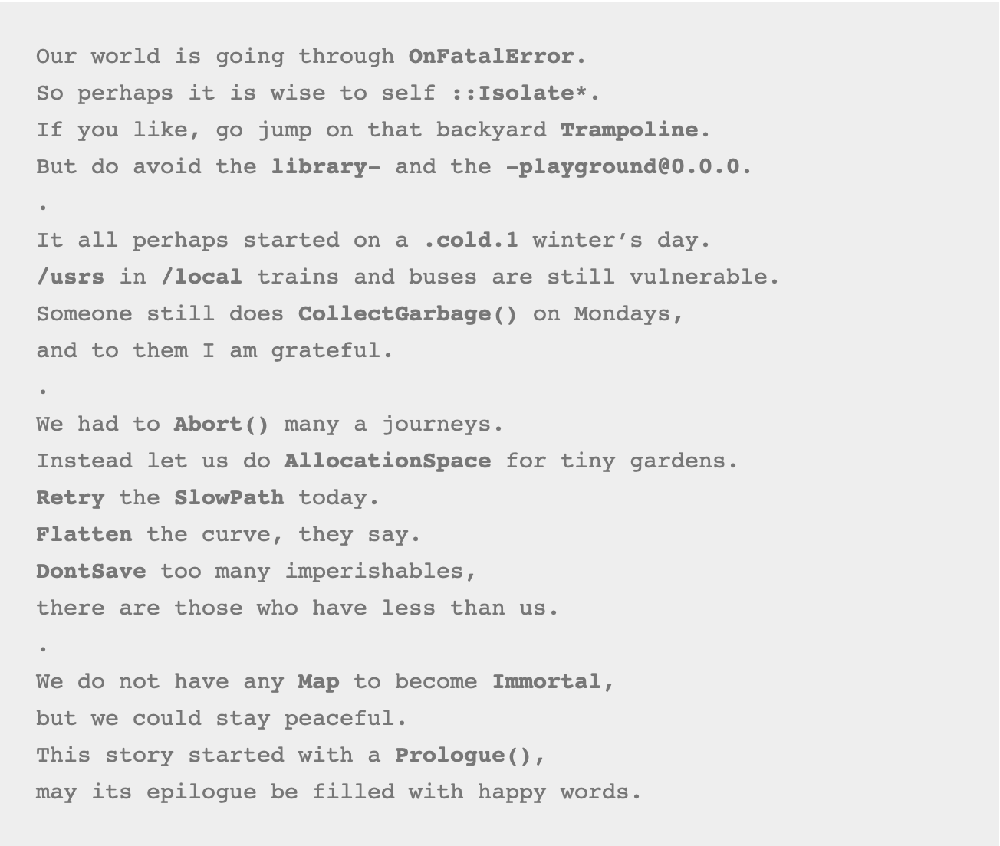
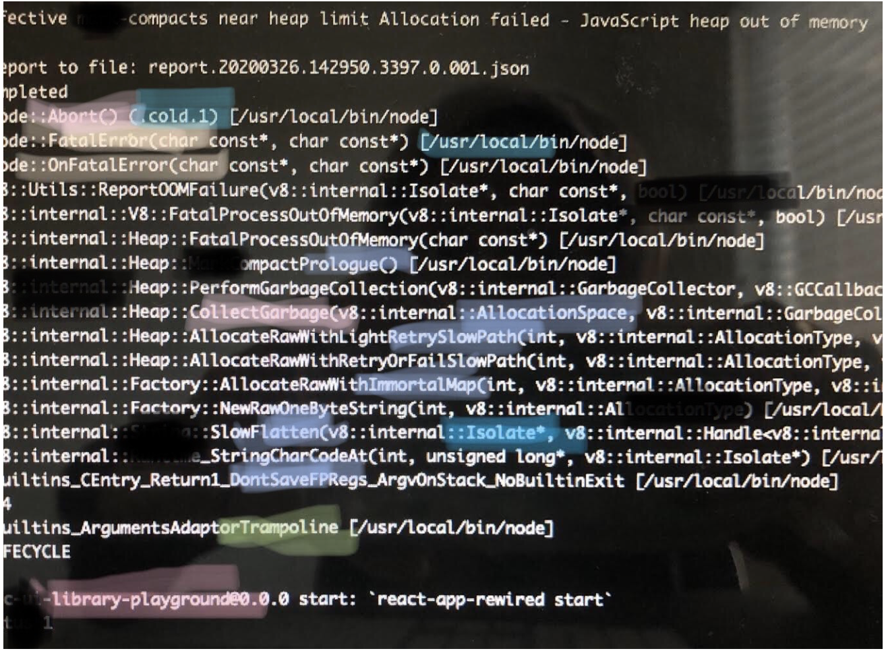

Cozy testing
Having some or any,
test cases for a feature,
is like having a warm and cozy blanket,
for the new and older tester alike.
a
a
a
a
Having some or any,
test cases for a feature,
is like having a warm and cozy blanket,
for the new and older tester alike.
The brain gymnastics needed to toggle between trying to be an awesome tester
and keeping afloat being a good enough programmer
.
Here is a poem I wrote while working from home during the pandemic of 2020:

It was actually inspired by a stack trace of an error I saw at the terminal:
